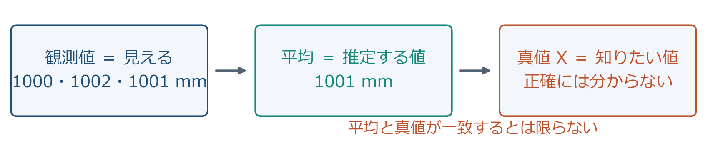
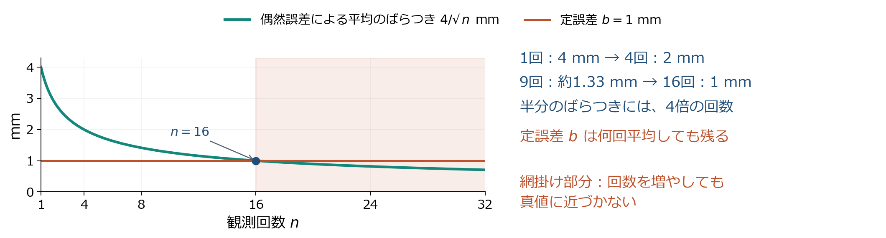
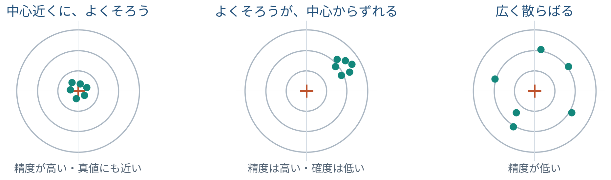
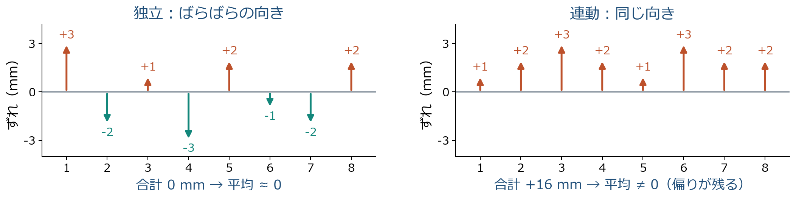
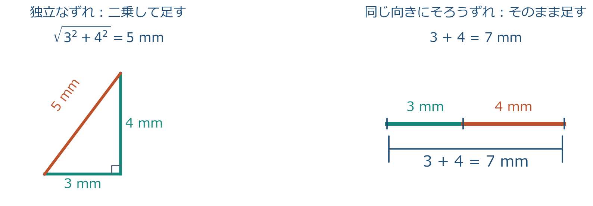

第2回「測量の基礎と誤差論」講師用解説
一本の筋と、教えるときに意識すること
対象はこの回を教える講師本人。84 枚のスライドがどういう思想で並んでいるか、どんな背景があるか、学生に何を意識させれば一本の線として届くかをまとめた。スライド本体は同じフォルダの 測量学_第02回_図解改訂版.pptx（原稿は slides_revised.md）、枚数の対応は README.md にある。
0. 要旨：この回を一文で言うと
授業中に何度も口にする言葉は 見えない真値・打ち消し合う・信用の重さ の三つ。「見えない真値」は、平均も標準偏差も信頼区間も全部「推定」であること（残差は真の誤差ではない、だから n−1、だから t 係数）。「打ち消し合う」は、平均が効く理由であり、効かない理由でもあること（定誤差は打ち消し合わない、連動するずれも打ち消し合わない、独立なら分散が足せる）。「信用の重さ」は、同精度なら 1/n ずつ、異精度なら分散の逆数、という統合の原理。ppm 表示も RTK の固定解も、最後はこの三語のどれかに帰着する。
1. 思想：測量にとって誤差とは何か
1.1 機器は観測値を出す。真値は出さない
巻尺も TS も GNSS も、出すのは観測値 xi であって、知りたい長さ X ではない。同じ机を三人で測れば 1000、1002、1001 mm と違う（6 枚目）。この違いは機器の不良ではなく、測るという行為の性質である。だから測量の成果は「50.005 m」ではなく「50.005 m、標準偏差 1.18 mm」と一組で出す（49 枚目、80 枚目）。これがこの回で学生に植え付けたい一番の感覚で、以後の全回（距離の補正、トラバースの閉合差、水準の許容値、GNSS の固定解）は全部「値と信頼度の組」で成果を見る。
真値が見えないことの帰結は意外に多く、スライドの至る所に顔を出す。真の誤差 εi＝xi−X は計算できないので、平均からのずれである残差 vi で代用する（33・34 枚目）。残差は観測値自身から決めた平均に寄るので、散らばりを小さめに見積もる。だから n ではなく n−1 で割る（18 枚目）。少ない観測から推定した標準偏差自体が不確かなので、信頼区間の係数は 1.96 ではなく 2.571 になる（19・20 枚目）。例題 B では群平均二個から σ0 を出すので自由度 1、推定はさらに不安定（67 枚目）。これらは別々の規則ではなく、全部「真値は見えない、だから推定している」の一つの帰結として話す。
1.2 ばらつきは消せない。だから分類する
誤差の三分類（7 枚目）は「原因の分類」として教えると項目の暗記になる。「対処の分類」として教えると筋になる。過失は式に入れずに除く（8 枚目）。定誤差は平均しても残るので、基準と比べて補正する（9 枚目）。偶然誤差は符号が読めないが打ち消し合うので、反復と統計で縮める（10 枚目）。この三つの対処が、以後の節の配置そのものである。
この分類を一本の式にしたのが 41 枚目の xi ＝ X ＋ b ＋ ei で、X が見えない真値、b が定誤差（偏り）、ei が偶然誤差（ばらつき）。この式はスライドでは 41 枚目に一度しか出ないが、講師は 6 枚目の時点から板書に残しておくとよい（第 2.1 節の地図）。平均を取ると ē は縮むが b は残る（41・42 枚目）。精度（ばらつきの小ささ）と妥当性（偏りの小ささ）が別物であること（21・22 枚目）、機器の精度表示が小さくても偏りの保証にならないこと（68・71 枚目）、観測値を書き換えてはいけないこと（72 枚目）も、全部この式の b と e の区別から言える。
1.3 平均が意味を持つのは「打ち消し合う」から
学生は平均を「とりあえず取るもの」と思っている。この回の中核は、平均が効く理由を一度きちんと言うことにある。理由は、偶然誤差がプラスにもマイナスにも出て、足すと打ち消し合うから（28 枚目）。打ち消し合いが起きる条件が三つ：同じ量を測っている、独立である、同じ条件である（28〜30 枚目）。条件が崩れると打ち消し合わない。前の人の値に合わせにいけば連動し（29 枚目）、器械の偏りは全員に同じ向きに入る（41 枚目）。
「打ち消し合う」は、量の話にもなる。独立な二つのずれの和を二乗すると積の項 2e1e2 が出るが、独立なら積の符号が偏らず平均で消える（38 枚目）。残るのは二乗の和、つまり分散の足し算で、直角三角形の斜辺のように合わさる（39 枚目）。これが平均の標準偏差が σ/√n になる根拠（40 枚目）であり、重み付き平均の分散（51・60 枚目）の根拠でもある。この「二乗して足す」原理は 2-4 と 2-6 で三回使われるが、スライドには一つの原理だという明示がない。講師が「同じ原理です」と毎回言う。
| 対象の性質 | 生じる問題 | 対応する節（枚） |
|---|---|---|
| 真値は直接見えない | 真の誤差を計算できず、残差で代用する。推定は小さめに出る | 2-1（6）、2-2（18）、2-3（33・34） |
| 一回の観測の誤差は多数の小さなずれの和 | 山の形になる。大きさを一つの数（標準偏差）で言える | 2-2（13〜17） |
| 偏りは平均で消えない | 補正・検定・既知点照合が別に要る。回数に上限がある | 2-1（9）、2-2（21・22）、2-4（41・42）、2-8（68・71）、2-9（72） |
| 観測は互いに独立とは限らない | 打ち消し合わず、分散が足せない。√n 則が崩れる | 2-1（11）、2-3（29）、2-4（38・39）、2-8（70） |
| 観測の信用度は一様でない | 同じ割合で足せない。分散の逆数で重み付けする | 2-6（50〜61）、2-7（63〜67） |
| 少数の観測から推定する | 標準偏差の推定自体が不確か。係数が大きくなる | 2-2（19・20）、2-7（67） |
1.4 五つの対比
| 対比 | 意味 | 効いてくる場所（枚） | 取り違えると起きる誤り |
|---|---|---|---|
| 真の誤差／残差 | 真値からのずれ ε は見えない。平均からのずれ v は計算できる | 6、18、33、34 | n で割る。残差和 0 を「過失がない証明」と読む |
| 偏り／ばらつき | 定誤差 b は補正で、偶然誤差 e は平均で扱う。妥当性と精度 | 9、21、22、41、42、68、71 | 定誤差を平均で消そうとする。そろっていれば正しいと思う |
| 独立／連動 | 独立なら打ち消し合い、分散が足せる。連動すると一直線に足される | 11、28、29、38、39、70 | 連続記録を回数として数え、√n で縮むと思う |
| 観測値の散らばり／平均値の散らばり | σ は観測値 1 個あたりが揺れる幅で、n 個の残差から n−1 で推定する。σx̄ は n 回の平均値が揺れる幅で、σ/√n。計算に使う個数ではなく「何の散らばりか」が違う（導出は第 3.2 節） | 17、19、36、40、47、49 | σ/n にする。観測値の 95% 範囲と平均の信頼区間を混同する。「1観測の標準偏差」を「1 個の値から計算した」と読む |
| 同精度／異精度 | 同精度なら 1/n ずつ、異精度なら分散の逆数で重み付け。検算は残差和／加重残差和 | 26、50、52〜55、57、58 | 重みを標準偏差の逆数にする。重み付き平均で Σv＝0 を期待する |
2. 一本の筋：84 枚を一つの物語として読む
2.1 一本の式と計算表の五段（授業中ずっと見せる地図）
地図は二段構えにする。上段は 一本の式 xi＝X＋b＋ei（41 枚目）で、各節が式のどの項を扱っているかを指差す。下段は 計算表の五段（73 枚目）で、演習の手順がその式のどこを計算しているかを指差す。6 枚目を見せた直後に式を板書し、各節の冒頭で「今日はこの項の話」と丸を付けて進む。
下段の計算表の五段（73 枚目）は、①〜⑥をこの順に手で通す手順になっている。「条件を読む」が①③と独立の確認、「最確値」が②⑤、「残差と検算」が②の推定を確かめる作業、「標準偏差」が④、「丸め」が⑥。演習（75〜79）の前にこの対応を一度言うと、学生は公式の暗記ではなく表の完成として問題を見る。


2.2 節ごとの役割
| 節（枚） | 地図の段 | 物語での役割 | 学生に残す一文 |
|---|---|---|---|
| 2-0 導入（1〜5） | ⑥ | 水路の高低差が「地形」か「ばらつき」か判断できない、という動機を置く | 「同じ区間を測っても毎回同じ値にはならない。差が本物かどうかを言える道具が今日の内容」 |
| 2-1 誤差の分類（6〜12） | ①②③④ | 真値は見えないと宣言し、三つの対処に分ける。以後の計算の前提（同じ量・独立・同精度）を置く | 「分類は原因ではなく直し方で覚える。除く、補正する、平均する」 |
| 2-2 偶然誤差の形と大きさ（13〜25） | ④③⑥ | 偶然誤差が山の形になる理由、その大きさを一つの数で言う方法、偏りとの区別、桁の扱い | 「散らばりは標準偏差で言う。そろっていることと合っていることは別」 |
| 2-3 最確値と残差（26〜35） | ②④⑤ | 同精度なら算術平均。それが効く条件（打ち消し合い）と、平均を疑う方法（残差和 0） | 「平均が効くのは打ち消し合うから。打ち消し合わない相手には効かない」 |
| 2-4 平均の標準偏差と限界（36〜42） | ④③ | 平均そのものの散らばりが σ/√n になる理由（二乗して足す）と、回数で減らないもの | 「回数で減るのは e だけ。b は回数では減らない」 |
| 2-5 例題 A（43〜49） | ②④⑥ | 同精度の筋を 6 回観測で一度手で通す。二つの標準偏差を併記して終わる | 「答えは 50.005 m と 1.18 mm の組。2.90 mm も別に書く」 |
| 2-6 重み（50〜62） | ⑤ | 信用の重さの一般則（分散の逆数）、その理由（谷の底）、特殊な場合（回数・路線長）、計算と検算 | 「重みは標準偏差ではなく分散の逆数。半分なら 4 倍」 |
| 2-7 例題 B（63〜67） | ⑤⑥ | 異精度の筋を群平均二個で通す。自由度 1 の推定の危うさで終わる | 「重みが違えば検算も違う。Σwv＝0 であって Σv＝0 ではない」 |
| 2-8 機器の精度表示（68〜71） | ③⑥ | TS・GNSS の「精度」を今日の言葉で読み直す。表示は b を保証しない | 「表示が小さいのは e が小さいこと。b は既知点で確かめる」 |
| 2-9 精度管理と手順（72〜74） | ①⑥ | 倫理（書き換えない）と、演習の手順（計算表の五段） | 「最確値を求めることと記録を直すことは別。表の順に解く」 |
| 2-10 演習（75〜79） | 全段 | 例題 A・B と同じ型を数値を変えて 25 分で解く | 「問 1 は残差和、問 2 は加重残差和で検算」 |
| 2-11 まとめ（80〜82） | ⑥ | 定義と手順を結び直す。次回は b を式で補正する回だと予告 | 「今日分類した定誤差を、次回は式で補正する」 |
2.3 節と節の橋渡し
節の最初の 30 秒で言う言葉。前の節の結論を一文で受け、次の節の問いを一文で立てる。これがないと節は「次の項目」になる。
導入 → 2-1：「水路の測量で 3 mm の差が出ました。地形の差ですか、測り方の揺れですか。それを言うには、まず揺れの正体を分けないといけない。揺れには三種類あって、直し方が違います」
2-1 → 2-2：「過失は除く、定誤差は補正する。残ったのは偶然誤差で、これは除けない。除けないものをどう扱うか。まず、どんな形をしているかを見ます。実は山の形をしていて、そうなる理由があります」
2-2 → 2-3：「偶然誤差の大きさは標準偏差という一つの数で言えるようになった。では真値に一番近い値はどれか。平均だと皆さん思っている。なぜ平均でいいのか、いつ平均してはいけないのかを今から言います」
2-3 → 2-4：「平均が最確値だと決まりました。では平均はどれくらい信用できるか。観測値 1 個あたり 4 mm 揺れる測り方なら、4 回の平均は何 mm 揺れるか。4 分の 1 ではありません。理由は『二乗して足す』」
2-4 → 2-5：「観測値 1 個あたりの σ と、n 回平均の σ/√n。二つの標準偏差が出そろいました。ここまでを 6 回の距離観測で、手で一度通します。演習と同じ型です」
2-5 → 2-6：「例題 A は全員同じ信用でした。だから 1/6 ずつ足した。では、精密な器械で測った値と粗い器械で測った値を混ぜるとき、同じ割合でいいか。よくない。では何対何か。答えは標準偏差ではなく分散の逆数で、理由は谷の底です」
2-6 → 2-7：「重みの一般則と、回数・路線長という二つの特殊な場合が出た。例題 B は回数の違う二組です。検算が例題 A と違うことに注意してください」
2-7 → 2-8：「ここまでは自分で測って自分で標準偏差を出した。現場では機器が『精度』を表示してくれる。その数字は今日の言葉のどれか。σ なのか、σ/√n なのか、b を含むのか。読み方を確認します」
2-8 → 2-9：「表示が小さくても b は保証されない。だから既知点で点検する。点検して許容値を超えたらどうするか。観測値を直すのではなく、再測する。最後に、今日の計算を表の手順にまとめて演習に入ります」
2-9 → 演習・まとめ：「問 1 は例題 A、問 2 は例題 B と同じ型です。公式を思い出すのではなく、表を上から埋めてください。残差和が 0 にならなかったら、平均か引き算か単位のどれかが違います」
3. 背景：話を太くする知識
スライドには書いていないが、講師が持っていると「なぜ」が一段深く言える知識。質問が出たとき・一言添えたいときに使う。
3.1 数学の背景
- 残差和 0 と自由度 — Σvi＝0 は平均の定義を代入しただけで成り立つ恒等式（33 枚目）。制約が一本あるので自由に動ける残差は n−1 個。18 枚目の①の説明の裏側。重み付きでは Σwivi＝0 が同じ恒等式になる（57 枚目）。
- n−1 の正体（ベッセル補正） — Σ(xi−X)2＝Σ(xi−x̄)2＋n(x̄−X)2 という分解で、右辺第 2 項の平均が τ2。だから残差平方和の平均は (n−1)τ2。18 枚目のノートに書いてある上級者向け補足の骨格。分散は不偏になるが、平方根の標準偏差にはわずかな偏りが残る。
- 二次関数の谷の底 — 最小二乗法（31・32 枚目）も重みの最適配分（52・53 枚目）も、同じ「二次関数の最小点」の話。前者は微分、後者は平方完成で解いているが、どちらでも解ける。微分が苦手な学生には後者の方法で前者も説明できる。
- 積の平均が 0＝無相関 — 38 枚目の「独立なら e1e2 の平均が 0」は共分散が 0 という意味。分散の加法と √n 則に要るのは独立ではなく無相関で、正規分布の仮定は要らない。相関 ρ があると平均の分散は τ2{ρ＋(1−ρ)/n} になり、回数を増やしても τ2ρ より下がらない（42 枚目ノート）。
- 中心極限定理の基本形 — 独立・同分布で有限分散の和を標準化すると標準正規に収束する。14 枚目の三条件（独立・突出なし・偏りなし）は、異なる小要因の和に適用するための追加条件（リンデベルグ条件に相当）を平易に言い換えたもの。「観測回数を増やすと個々の観測値が正規分布になる」という誤解とは別の話。
- t 分布の係数 — 19・20 枚目の 2.571 は自由度 5 の両側 5% 点。自由度が大きくなると 1.96 に近づく（自由度 30 で 2.04 程度）。「6 回しか測っていないから σ 自体が頼りない、その分だけ幅を広げる」という一言で十分。
- ガウス・マルコフの定理 — 係数の和が 1 の線形結合の中で分散最小のものが逆分散重みの平均（53 枚目）。これが「最良線形不偏推定」で、正規分布を仮定しない。53 枚目の「正規分布の仮定は不要」の根拠。
3.2 標準誤差 σ/√n の導出：なぜ平均値の揺れは 1/√n に縮むか
36〜40 枚目は結論と直観（1/4 ずつ伝わる、二乗して足す、直角三角形）を見せるが、式としての導出は 40 枚目に一行あるだけである。学生に「なぜ n ではなく √n か」「なぜ標準偏差ではなく分散を足すのか」と聞かれたときに、板書で最後まで通せるよう、段階ごとに書く。統計学ではこの σ/√n を 標準誤差（平均値の標準誤差）と呼び、測量では 最確値の標準偏差 と呼ぶ。同じものである。
第 0 段：用語を二つに分けてから始める
σ と σx̄ は、どちらも n 個の観測値から計算する。違いは計算に使う個数ではなく、何の揺れを言っているかである。
| 何の揺れか | 意味 | 計算 | 例題 A | |
|---|---|---|---|---|
| σ | 観測値 1 個あたり | この測り方でもう 1 回測ったら、観測値はどれくらいの幅で出るか | n 個の残差から √(Σv²/(n−1)) | 2.90 mm |
| σx̄ | n 回の平均値 | もう一度 n 回測って平均し直したら、平均値はどれくらいの幅で出るか | σ/√n | 1.18 mm |
「1観測の標準偏差」（47 枚目）という呼び名は「観測値 1 個あたりの散らばり」の意味であって、1 個の値から計算したという意味ではない。この一言を先に言わないと、学生は「1 個の値に標準偏差があるはずがない」と当然の疑問を持つ。
第 1 段：前提を式で置く
過失は除き、定誤差 b は補正済みとする（11 枚目の前提）。残るのは偶然誤差だけなので、i 回目の観測値は
xi ＝ X ＋ ei （i ＝ 1, …, n）
ここで X は見えない真値、ei は i 回目の偶然誤差。ei について仮定するのは次の三つだけである。
- 偏りなし：ei の平均（期待値）は 0。E[ei]＝0。
- 同精度：どの回も同じ大きさで揺れる。E[ei2]＝τ2（τ は母標準偏差。見えない真の散らばり）。
- 独立（無相関）：i 回目の揺れと j 回目の揺れに関係がない。E[eiej]＝E[ei]E[ej]＝0（i≠j）。
正規分布の仮定はここには入っていない。以下の導出は分布の形を使わない。
第 2 段：平均値の誤差を書き下す
x̄ ＝ (1/n) Σ xi ＝ (1/n) Σ (X ＋ ei) ＝ X ＋ (1/n) Σ ei
つまり平均値の誤差は ē＝(1/n)Σei、個々の誤差の平均である。37 枚目の「一つの観測のずれは 1/n だけ伝わる」はこの式のこと。平均値の揺れの大きさとは、この ē がどれくらい揺れるかである。
第 3 段：揺れの大きさを「二乗の平均」で測る
ē はプラスにもマイナスにもなるので、そのまま平均すると 0 になって大きさが測れない。だから二乗してから平均する。これが分散で、その平方根が標準偏差である。
Var(x̄) ＝ E[(x̄ − X)2] ＝ E[ē2] ＝ (1/n2) E[(e1 ＋ e2 ＋ … ＋ en)2]
1/n が二乗されて 1/n2 になったことに注意する。ここまでは「1/n ずつ伝わる」の帰結で、まだ n 個の揺れを足していない。
第 4 段：和の二乗を展開する（38 枚目の中身）
n 個の和の二乗を展開すると、「自分同士の積」が n 個と、「別の回との積」が n(n−1) 個出る。
(e1 ＋ … ＋ en)2 ＝ Σ ei2 ＋ Σi≠j eiej
n＝2 なら (e1＋e2)2＝e12＋e22＋2e1e2。38 枚目の (p＋q)2 がこれ。板書では n＝2 で展開して見せ、「n 個でも同じ形」と言えば足りる。
第 5 段：期待値を取ると積の項が消える（独立を使う場所）
第 1 段の仮定を当てはめる。
- 自分同士の積 ei2 の平均は τ2。これが n 個あるので合計 nτ2。
- 別の回との積 eiej は、i 回目がプラスのとき j 回目がプラスかマイナスかは決まっていない（独立）。だから積はプラスとマイナスが同じ頻度で出て、平均は 0。n(n−1) 個あるが全部 0。
E[(e1 ＋ … ＋ en)2] ＝ nτ2 ＋ 0 ＝ nτ2
ここが導出の心臓である。「独立だから積の平均が 0」が成り立たないと、以後の式は全部崩れる。分散が足せる（二乗して足す）のは、積の項が消えるから、と一言で言える。39 枚目の直角三角形は、この「積の項が消えた」状態の図である（直角＝内積 0＝積の平均 0）。
第 6 段：まとめて √n が出る
Var(x̄) ＝ (1/n2) × nτ2 ＝ τ2/n ∴ σ(x̄) ＝ τ/√n
分子の n（揺れが n 個足される）と分母の n2（1/n ずつ伝わるものの二乗）が打ち消し合って、分散が 1/n になる。標準偏差はその平方根なので 1/√n。「n で割る」と「n2 で割る」の間を取った形になっているのは、足されるのが n 個の揺れだが、足し方が一直線ではなく直角だからである。もし n 個の揺れが全部同じ向きにそろう（完全に連動する）なら、積の項も全部 τ2 で、E[(Σe)2]＝n2τ2、Var(x̄)＝τ2。平均しても何も縮まない。29 枚目の「連動」と 70 枚目の GNSS 連続記録はこの場合に近い。
第 7 段：τ は見えないので σ で置き換える
τ は母集団の散らばりで、真値と同じく見えない。見えるのは n 個の観測値だけなので、残差から推定した σ2＝Σvi2/(n−1) を τ2 の代わりに使う（この σ2 の平均が τ2 に一致するように n−1 で割っている。第 3.1 節のベッセル補正）。したがって
σx̄ ＝ σ/√n ＝ √( Σvi2 / (n(n−1)) )
例題 A では Σv2＝42、n＝6 なので、σ＝√(42/5)＝2.90 mm、σx̄＝√(42/30)＝√1.4＝1.18 mm（47・49 枚目）。n−1 と √n が両方出てくるのはこの第 7 段と第 6 段が別の段だからで、前者は τ をどう推定するか、後者は τ から平均の揺れをどう出すかである。
検算：15 枚目のコインで数えてみる
ei が ＋1 か −1 を同じ確率で取るとする（τ2＝1）。n＝4 で Σe の出方は 15 枚目の表のとおり 1, 4, 6, 4, 1 通り（計 16 通り）。
| Σe | −4 | −2 | 0 | ＋2 | ＋4 | 合計 |
|---|---|---|---|---|---|---|
| 通り数 | 1 | 4 | 6 | 4 | 1 | 16 |
| (Σe)2 × 通り数 | 16 | 16 | 0 | 16 | 16 | 64 |
E[(Σe)2]＝64/16＝4＝nτ2。第 5 段の結論が数え上げで確かめられる。よって Var(ē)＝4/16＝1/4＝τ2/n、標準偏差は 1/2＝τ/√4。この表は 15 枚目をそのまま使えるので、導出を信じない学生にはここを板書する。
一般化：同じ一本の式が 2-6 でも使われる
第 3〜5 段を係数付きで書くと、独立な観測の線形結合について
Var(Σ aixi) ＝ Σ ai2 Var(xi)
が成り立つ（積の項が消えるので、二乗した係数と分散の積を足すだけ）。ai＝1/n、Var(xi)＝τ2 を入れると τ2/n で第 6 段に戻る。重み付き平均では ai＝wi/Σw、Var(xi)＝mi2＝σ02/wi を入れると Var(x̄w)＝Σ(wi2/(Σw)2)(σ02/wi)＝σ02Σwi/(Σw)2＝σ02/Σw で、60 枚目の式になる。51 枚目の配分の分散 α2m12＋(1−α)2m22 も同じ式に a1＝α、a2＝1−α を入れたもの。40・51・60 枚目の三つの公式は、この一本の式の三つの代入である。
- 「σ は 6 個の残差から計算した。でも言っているのは『観測値 1 個あたりがどれくらい揺れるか』。7 回目を測ったら ±2.9 mm くらいの幅で出る、という意味です」
- 「平均値の誤差は、個々の誤差の平均。1/n ずつ伝わる。ここまでは 37 枚目」
- 「揺れの大きさは二乗の平均で測る。1/n が二乗で 1/n² になる。そして n 個の揺れの和の二乗を展開する。自分同士の積が n 個、他の回との積が n(n−1) 個」
- 「独立なら、他の回との積はプラスとマイナスが同じだけ出て、平均で消える。残るのは自分同士の積 n 個、合計 nτ²。これが『二乗して足す』」
- 「nτ² を n² で割って τ²/n。平方根で τ/√n。n で割るのでも n² で割るのでもなく、その間。揺れが直角に足されるから」
- 「τ は見えないから、残差から出した σ で代用する。だから σ/√n。n−1 は σ を出すときの話、√n はその後の話」
3.3 物理の背景
- 同じ原因が b にも e にもなる — 鋼巻尺の線膨張係数は 1.2×10−5/℃ 程度で、50 m を標準温度より 10 ℃ 高い状態で測ると 6 mm 程度伸びる。これは測定中の平均温度に対する補正（定誤差、第 3 回）。一方、測定中の温度の「むら」は観測ごとに違うので偶然誤差（13 枚目の ±0.2 mm）。同じ温度という原因が、平均値の分は b、揺れの分は e に入る。この話をすると 7 枚目の分類が「原因」ではなく「振る舞い」の分類だと伝わる。
- ppm の二項の由来 — 69 枚目の a は距離によらない項で、位相の読み取り分解能や器械定数の残りから来る。p は距離に比例する項で、変調周波数のずれや大気の屈折率（気温・気圧）の不確かさから来る。だから長距離ほど気象補正が効く。第 3 回の光波測距につながる。
- GNSS の連続記録は独立でない — 70 枚目の「相関」の実体。1 秒ごとの座標は同じ衛星配置・同じ大気・同じマルチパスを共有するので、60 エポック取っても独立 60 回ではない。時間を空けて再初期化する（71 枚目）のは、独立な観測に近づけるため。
- 目の分解能と読み取り誤差 — 13 枚目の「目盛を読む目のぶれ」は、人の目の角分解能が 1 分程度で、読み取り距離 30 cm なら 0.1 mm 程度に当たること。mm 目盛の巻尺で 0.1 mm 単位を読むのは推定であり、だから揺れる。
3.4 歴史の背景
| 年 | 出来事 | 授業での使い方 |
|---|---|---|
| 1733 | ド・モアブルが二項分布を正規分布で近似 | 15・16 枚目のコインの図は、この最初の正規分布の発見そのもの。「コインを足すと山になる」は 300 年近く前の発見だと一言 |
| 1805 | ルジャンドルが最小二乗法を発表 | 31 枚目。彗星の軌道決定のため。測量と天文は同じ数学を使ってきた |
| 1809 | ガウスが『天体運動論』で正規分布と最小二乗法を結び付け、重み付けにも触れる | 26 枚目ノートの「正規分布のモデルでは算術平均が最尤」。ガウスは「算術平均が最良」を出発点に正規分布を導いた。平均が先、分布が後という順序が面白い |
| 1810 | ラプラスが中心極限定理を証明 | 14 枚目。「小さなずれの和は山になる」の数学的保証 |
| 1821〜1823 | ガウスが分散最小の線形推定を正規分布なしで示す（『観測の組合せの理論』） | 53 枚目の「正規分布の仮定は不要」。ガウスは測地測量（ハノーファー三角測量）の実務の中でこれを書いた |
| 19 世紀 | ガウスの「中等誤差（mittlerer Fehler）」が標準偏差に相当。確率誤差 0.6745σ も天文・測地で常用 | 50 枚目の記号 m は中等誤差の頭文字。25 枚目の確率誤差は旧資料の読み方として |
| 1908 | ゴセットが「Student」の筆名で t 分布を発表 | 19・20 枚目。少数データから推定するときの係数。ビール工場の品質管理が出所 |
| 1994 | ISO 5725 が accuracy＝trueness＋precision と整理 | 21 枚目の「精度」「妥当性」の用語の根拠。旧来の「確度」を本講義で「妥当性（正確さ）」と呼ぶ理由 |
| 1993／2008 | GUM（測定の不確かさの表現ガイド）初版、JCGM 100:2008 として再刊 | 83 枚目。この回の出典。「不確かさ」という言葉で誤差論を国際的に統一した文書 |
3.5 制度の背景
- 公共測量作業規程の準則 — 観測の較差・閉合差の許容範囲を級ごとに定める。水準測量では「係数 × √S（S は路線長 km）」の形で、分散が路線長に比例する（55 枚目）という前提がそのまま制度の式に入っている。係数の値は第 8 回で扱う。72 枚目の「許容値を超えたら再測」の根拠。
- 観測値の修正禁止 — 72 枚目。作業規程は観測手簿の記載と訂正の方法を定めており、消して書き直すのではなく、元の値が読める形で訂正し理由を残す。「最確値を計算すること」と「観測値を改ざんすること」の区別は制度上も明確。
- 計測用語の標準 — JIS の計測用語で「精度」「精密さ」「正確さ」が定義されている。機器カタログの「精度」がどれを指すかは製品ごとに違うので、68・69 枚目の「定義を説明書で確認」はこの事情による。
- 測量士補試験は電卓不可 — 講義計画の方針。だから第 14 回に電卓なしの概算問題が入る。この回の「端数だけで計算する」（44 枚目）は、その練習でもある。
3.6 農業農村工学への接続
- 水路勾配の判断（4 枚目）— 勾配 1/1000 なら 100 m で高低差 10 cm。レベルの読みが mm 単位で揺れるとき、10 m 区間の 1 cm の差が本物かどうかは、σ/√n と比べないと言えない。この回の内容は第 7・8 回の水準測量で直接使う。
- 実習の 3 回計測（70 枚目）— 同一点を 3 回測って平均したのは、σ/√3 で縮めるためと、外れ値（過失）に気付くため。3 回なら必ず十分という規則ではない。
- 圃場の均平と GNSS 農機 — レーザー均平や RTK 自動操舵の仕様に「精度 ±○ cm」と書いてある。それが σ か、95% 範囲か、既知点との差かで意味が変わる（68・71 枚目）。
- 面積・土量の誤差 — 第 12 回で座標法面積の誤差伝播を扱う。38〜40 枚目の「二乗して足す」がそのまま使われる。ここで原理を一度言っておくと第 12 回が軽くなる。
- 補足資料 — 2-4 節を導入から独立に説明する補足スライド 22 枚が
../補足_平均の誤差伝播_20261014/にある（30 m 基準線で平均の目標 2 mm なら 9 回以上、という現場の計画例を含む）。2-4 を厚くしたいときや、復習回に使う。
4. 節ごとの教え方
各節について、位置づけ・肝となる枚・言い回し・つまずき・飛ばせる枚。言い回しはそのまま口にできる文にしてある。時間は講義 55 分（6〜74 枚目）の配分の目安。
2-1 誤差の分類（6〜12 枚目、6 分）
位置づけ：地図の①〜④を全部一度並べる節。真値が見えないと宣言し（②）、三つの対処（①③④）に分け、以後の計算の前提を置く（11 枚目）。
肝となる枚：6（見える・推定・見えないの三つを分ける図）と 9（平均しても 2 mm が残る数値例）。9 枚目が 41 枚目と 72 枚目の伏線。
- 「観測値は見える。真値は見えない。今日出てくる平均も標準偏差も、全部『見えないものの推定』です」
- 「分類は原因で覚えないでください。直し方で覚える。除く、補正する、平均する。この三つが今日の節の順番です」
- 「1002、1003、1001 の平均は 1002。何回測っても 2 mm は残る。平均は万能ではない。これを覚えて 2-4 まで来てください」
- 「11 枚目の前提は、崩れたときに何が起きるかを後で全部見せます。今は『平均には条件がある』とだけ」
- 「離れた値は過失だから消す」 — 8 枚目。外れた値は点検のきっかけであって、見た目で過失と断定しない。30 枚目と 72 枚目で繰り返す。
- 定誤差を「常に同じ値」と思う — 9 枚目ノート。温度や距離に応じて規則的に変わるものも定誤差。「同じ向き・同じ規則」が本質。
飛ばせる枚：なし。12 枚目の確認①（反射鏡定数）は 1 分で必ず入れる。「平均で除けるか」に「除けない、定誤差」と答えられれば③の筋が通っている。
2-2 偶然誤差の形と大きさ、精度と妥当性（13〜25 枚目、11 分）
位置づけ：地図の④の性質（山の形、標準偏差）と、③との区別（精度と妥当性）、⑥の桁。この節が 13 枚で最長の一つで、性質の違う話が五つ入っている（第 8 節）。講師が「今は e の形、今は e の大きさ、今は b との区別、今は桁」と切れ目を言う。
肝となる枚：13（一回の誤差は小さなずれの合計）、17（標準偏差の手順と単位）、18（n−1）、21（そろうことと合うことは別）。
- 「一回の読みの誤差は、目のぶれ、張り方、温度、合わせ方の合計。四つがみんな同じ向きに最大になることはまれ。だから真ん中が多くて山になる」（13・14）
- 「コイン 4 枚で 0 が 6 通り、±4 が 1 通り。これが山の正体。ずれの原因が増えるほどなめらかになる」（15・16）
- 「標準偏差は、二乗して、足して、n−1 で割って、平方根。二乗で mm² になって、平方根で mm に戻る。単位で手順を覚える」（17）
- 「なぜ n−1 か。残差を 2 個決めたら 3 個目は決まってしまう。自由に動けるのは n−1 個。それと、平均は観測値の側に寄るから、ずれが小さめに出る。その分を補う」（18）
- 「2.571 が 2 より大きいのは、6 回しか測っていないから σ 自体が頼りない。その分だけ幅を広げる」（19）
- 「そろっていても合っているとは限らない。そろい方は繰り返せば分かる。合っているかは、基準と比べないと分からない」（21・22）
- 「観測を増やすと観測値が正規分布になる」 — 14 枚目ノート。正規になるのは「多数の小さなずれの和」であり、回数の効果ではない。回数の効果は 2-4。
- 観測値の 95% 範囲と平均の信頼区間の混同 — 19 枚目。前者は ±2σ（例題 A で ±5.8 mm）、後者は ±t·σ/√n（±3.04 mm）。対象が違う。
- 「分解能 1 mm だから誤差 1 mm 以内」 — 23 枚目。読める刻みと標準偏差は別。
- 高校の「n で割る分散」との衝突 — 17 枚目の出典注記。高校はデータの記述、ここは母集団の推定。目的が違うので割る数が違う、と一言。
飛ばせる枚：25（確率誤差。旧資料の読み方で、演習に使わない）、20（0.975 の理由。19 で「表の読み方は注意」と言えば済む）、15・16 のどちらか一方（コインの表と図は同じ内容）。

2-3 最確値と残差（26〜35 枚目、8 分）
位置づけ：地図の②（推定する）と⑤（同じ信用なら 1/n ずつ）と④の条件（打ち消し合う）。「平均してよいか」を疑う節であり、最小二乗法と残差和 0 で「平均を信じる根拠」を与える節。
肝となる枚：26（同精度の定義と 1/n ずつの理由）、28（打ち消し合う三条件）、33（残差和 0 の手順と理由）。
- 「同精度とは、同じ一つの量を、同じ器械・同じ方法・同じ条件で。器械や人が途中で変わったら同精度とは限らない」（26）
- 「平均が効くのは打ち消し合うから。打ち消し合う条件は三つ。同じ量、独立、同条件。机の縦と横の平均は何の長さでもない」（28）
- 「前の人の値を見て合わせにいったら、それは独立ではない。ずれが同じ向きにそろって、足しても消えない」（29）
- 「二乗和を最小にする a を探すと平均が出てくる。平均は『とりあえず』ではなく、ずれの二乗の合計を一番小さくする値です」（31・32）
- 「残差を全部足して 0 になるか。ならなければ平均か引き算か単位が間違っている。0 になっても過失がない証明にはならない」（33・34）
- 残差の符号の向き — 本講義は観測値−平均。資料によって逆なので、演習の採点で混乱する。33 枚目で一度宣言する。
- 途中で丸めて残差和が合わない — 34 枚目。丸めが原因であって観測の間違いではない。演習で最も多い検算の失敗。
- 斜距離と水平距離の平均 — 30 枚目。単位が同じでも対象量が違う。第 3 回の換算の伏線。
飛ばせる枚：31・32（最小二乗法。2-6 の 52 枚目で「谷の底」をもう一度やるので、ここは「二乗和を最小にすると平均が出る」の一言でよい）、34（丸めの例。33 で口頭で言える）。

2-4 平均の標準偏差と回数の限界（36〜42 枚目、6 分）
位置づけ：地図の④の量（σ/√n）と③の限界（b は減らない）。この回で一番「なぜ」を言う価値がある節。「二乗して足す」原理をここで名前を付けて出す。σ/√n の導出を板書で通す手順は第 3.2 節に段階ごとに書いた。
肝となる枚：38（積の平均が 0）、39（直角三角形）、41（x＝X＋b＋e）、42（限界の図）。
- 「4 回平均で、一つの観測の 4 mm のずれは 1 mm だけ伝わる。でも 4 つとも揺れる。合計はどうなるか。1＋1＋1＋1 ではない」（37）
- 「二つのずれの和を二乗すると、積の項が出る。独立なら積の符号は偏らず、平均で消える。残るのは二乗の和。これを『二乗して足す』と呼びます。今日あと二回出てきます」（38）
- 「独立なずれは直角三角形の二辺。3 と 4 なら 5。同じ向きにそろうなら一直線で 7。独立だから 7 より小さく済む。これが平均で縮む根拠」（39）
- 「観測値は真値＋偏り＋揺れ。平均で縮むのは揺れだけ。偏りは何回測っても残る。4 mm の揺れと 1 mm の偏りなら、16 回で頭打ち」（41・42）
- 「半分にするには 4 倍の回数。4 分の 1 にするには 16 倍。回数は高い。偏りは回数ではなく補正で減らす」（41）
- σ/n にする — 36・40 枚目。分散が 1/n になるので標準偏差は 1/√n。「二乗して足す」を経由すれば間違えない。
- τ と σ の区別 — 40 枚目。τ は母標準偏差（真のばらつき）、σ はその推定。式は τ で導き、計算は σ で代用する。見えない真値の話と同じ構図。
- 「正規分布だから分散が足せる」 — 38 枚目ノート。足せるのは独立（無相関）だから。正規分布の仮定は不要で、中心極限定理とも別。
飛ばせる枚：37（37 の内容は 40 に含まれる）。38・39・41・42 は背骨。時間に余裕があるときは補足資料（第 3.6 節）に差し替えて 20 分かけてよい。

2-5 例題 A（43〜49 枚目、5 分）
位置づけ：同精度の筋（②④⑥）を手で一度通す。演習問 1 と同じ型。計算表を上から埋める練習であり、新しい概念は出ない。
肝となる枚：46（残差和 0 の検算）、49（二つの標準偏差の併記）。
- 「50 m は共通部分。端数の 1、3、4、6、7、9 だけで平均すれば暗算でできる。最後に 50 を戻す」（44）
- 「残差の合計が 0。これで平均と引き算は合っている。平方和 42 を次に使う」（46）
- 「42 を 5 で割る。6 ではない。6 個の観測から平均を一つ決めたから」（47・48）
- 「答えは 50.005 m と 1.18 mm の組。2.90 mm は観測値 1 個あたりの散らばりで、6 個の残差から推定した値。別に書く。どちらも報告する」（49）
- 「1観測の標準偏差」を「1 個の値から計算した」と読む — 47 枚目の呼び名。計算には 6 個の残差を全部使う。「1観測の」は「観測値 1 個あたりがどれくらい揺れるか」という意味で、11 回目を測ったら ±2.9 mm 程度の幅で出る、と言い換える。
- 丸めた 2.90 を √6 で割る — 49 枚目。√8.4 を直接 √6 で割る。途中値を電卓に残す。
- 二乗で符号を落とす — 45 枚目。(−4)² は括弧ごと二乗。
飛ばせる枚：45・46 を一枚で済ませる（表を一度に見せる）。48 の確認③は 47 の口頭確認に吸収できる。
2-6 重み（50〜62 枚目、10 分）
位置づけ：地図の⑤。13 枚で最長。構造は「一般則（50）→ 理由（51〜53）→ 特殊な場合（54・55）→ 計算（56）→ 検算（57・58）→ 二つの標準偏差（59・60）→ 注意（61）→ 確認（62）」で、例題 A の流れ（平均→残差→検算→標準偏差）を重み付きでなぞっている。この対応を最初に言うと 13 枚が 1 本に見える。
肝となる枚：50（分散の逆数、半分なら 4 倍）、52（谷の底で 80:20）、54・55（回数と路線長は特殊な場合）、57（加重残差和 0）。
- 「重みは信用の重さ。標準偏差が半分なら信用は 2 倍ではなく 4 倍。分散の逆数だから」（50）
- 「精密な方だけ使えば分散 1。半々で 1.25。8 割 2 割で 0.8。粗い方を 2 割混ぜた方が良くなる。理由は谷の底」（51・52）
- 「回数に比例、路線長に反比例は覚えなくていい。分散がどうなるかを問題文から読んで、逆数を取る。それだけ」（54・55）
- 「検算が変わる。重み付き平均では Σv ではなく Σwv が 0。例題 A と同じ式に重みを掛けただけ。重みが全部 1 なら元に戻る」（57・58）
- 「σ0 は『重み 1 の観測の散らばり』。重みは比だから、重み 1 の意味は自分で決めた尺度。尺度を変えると σ0 は変わるが平均の標準偏差は変わらない」（59〜61）
- 重みを標準偏差の逆数にする（1:2） — 50・62 枚目。確認④で必ず引っかける。
- 重みも二乗する — 65 枚目。加重平方和は w·v²。w² ではない。
- 記号 m と単位 mm — 50 枚目。斜体 mi は標準偏差、立体 mm は単位。板書で書き分ける。
- 重み付き平均でも Σv＝0 を期待する — 58 枚目。例題 B で Σv＝6 mm になるのは正常。
飛ばせる枚：51〜53（配分と平方完成。50 で「分散の逆数」と結論だけ言う。質問が出たら 52 を見せる）、61（尺度の注意。演習は無次元の相対重みに統一しているので、口頭で一言）。54・55 は試験の型なので残す。
2-7 例題 B（63〜67 枚目、4 分）
位置づけ：異精度の筋（⑤⑥）を群平均二個で通す。演習問 2 と同じ型。67 枚目で「自由度 1 の推定は危うい」と言って、計算が成立することと実務で十分なことを分ける。
肝となる枚：64（重い方へ寄る）、65（Σwv＝0、Σv≠0）、66（n は群数 2）。
- 「平均は 40.002 の側へ寄る。単純平均なら 40.007。重い方へ 4 対 1 で引っ張られる」（64）
- 「Σv は 6 mm。慌てない。Σwv が 0 ならよい」（65）
- 「n は 2。元の観測 5 回ではない。統合した値が 2 個、最確値が 1 個、自由度 1」（66）
- 「自由度 1 で出した σ0 は頼りない。だから群内の記録も残し、独立に点検する。計算ができることと、精度管理に十分なことは別」（67）
- 分母を 5−1＝4 にする — 66 枚目。
- σ0＝8.94 を「観測一回の散らばり」と読む — 59 枚目の定義に戻る。重み 1 の群平均（1 回観測の組）の散らばり。
飛ばせる枚：なし。5 枚で 4 分。
2-8 機器の精度表示（68〜71 枚目、3 分）
位置づけ：地図の③と⑥。今日の言葉で機器の表示を読み直す節。新しい計算はなく、「表示が小さいのは e が小さいこと。b は保証されない」の一点。
肝となる枚：68（表示の定義を確認）、71（固定解でも妥当性の保証ではない）。
- 「機器の『精度』は σ か、σ/√n か、95% 範囲か、既知点との差か。説明書を読まないと分からない。読まずに信じない」（68）
- 「2 mm＋2 ppm。500 m なら 2 ppm は 1 mm で合計 3 mm。± は最大誤差とは限らない」（69）
- 「実習で 3 回測ったのは、√3 で縮めるためと、外れに気付くため。3 回なら十分、という規則ではない」（70）
- 「固定解は整数が決まったという意味。間違った整数に決まることもある。だから既知点で点検する。表示は e の話、点検は b の話」（71）
- 1 次元の 68% 則を水平位置の指標に当てはめる — 68 枚目ノート。座標成分ごとか、水平全体かで意味が違う。
- ppm の係数を b と書く — 69 枚目。本講義では b を定誤差に使うので p。市販カタログは b と書くことが多い。
飛ばせる枚：70・71（第 9 回で詳しく扱う。68・69 だけ残す）。
2-9 精度管理と共通手順（72〜74 枚目、2 分）
位置づけ：地図の①（除くときの作法）と⑥（報告の作法）。倫理（72）は 9 枚目と 8 枚目の帰結として言う。73 は演習への橋で、地図の下段そのもの。
- 「最確値を計算することと、観測値を書き換えることは全く別。補正も調整も、元の値が追える形で残す」（72）
- 「公式を暗記しない。条件を読む、最確値、残差と検算、標準偏差、丸め。表を上から埋める」（73）
- 「固定解で表示も小さい。これだけで正確と言えるか。言えない。既知点との比較か、再初期化して再観測」（74）
飛ばせる枚：なし。3 枚で 2 分。
2-10・2-11 演習とまとめ（75〜82 枚目、30 分）
演習は 25 分で短答 3 分、問 1 が 11 分、問 2 が 9 分、検算 2 分。78 枚目の記入規則（距離は m で小数第 3 位、残差は mm、標準偏差は最後に丸めて 0.01 mm）は残り 2 分の合図で再表示する。80 枚目のまとめは「値と信頼度の組」「b と e の区別」「重みは分散の逆数」の三つに絞って言い、81 枚目の試験の型は「回数に比例・路線長に反比例を条件なしで覚えない」の一点。82 枚目で「今日分類した定誤差を、次回は式で補正する」と予告して、第 3 回の巻尺補正へつなぐ。
5. 試験の型を思想で読む
定番の誤文を「どの対比・どの段の取り違えか」で読むと、暗記ではなく思想で判定できる。
| 誤文（試験でよく出る言い方） | 取り違えている対比・段 | 正しい読み | 枚 |
|---|---|---|---|
| 「定誤差は観測回数を増やして平均すれば除去できる」 | 偏り／ばらつき（③と④） | 平均で縮むのは e だけ。b は補正・検定・既知点照合で除く | 9、41、42 |
| 「過失も小さければ偶然誤差として統計処理してよい」 | ①を式に入れる | 過失は式に入れない。原因を確かめて除くか再測 | 8、30 |
| 「精度が高い観測は正確さ（確度）も高い」 | 偏り／ばらつき | そろうこと（e 小）と合うこと（b 小）は別。妥当性は基準と比べないと分からない | 21、22 |
| 「観測値の標準偏差は残差の平方和を n で割って平方根を取る」 | 真の誤差／残差（②の推定） | 平均を観測値から決めたので自由度は n−1 | 18、47 |
| 「最確値の標準偏差は観測値の標準偏差を n で割ったもの」 | 観測値の散らばり／平均値の散らばり（二乗して足す） | 分散が 1/n だから標準偏差は 1/√n | 36、40 |
| 「観測回数を 2 倍にすると最確値の標準偏差は半分になる」 | √n 則 | 半分にするには 4 倍。2 倍では 1/√2 | 41 |
| 「回数を増やせばいくらでも真値に近づく」 | ③の限界 | σ/√n が b を下回ったら頭打ち。真値からのずれは √(b²＋σ²/n) 程度 | 42 |
| 「重みは標準偏差に反比例する」 | ⑤の一般則 | 分散（標準偏差の二乗）に反比例。半分なら 4 倍 | 50、52、53、62 |
| 「重みは観測回数に反比例する」「重みは路線長に比例する」 | ⑤の特殊な場合の向き | 分散が 1/n なら重みは n に比例。分散が S に比例なら重みは 1/S。向きは分散から導く | 54、55、81 |
| 「重み付き平均でも残差の和は 0 になる」 | 同精度／異精度の検算 | 0 になるのは加重残差和 Σwv。Σv は 0 とは限らない | 57、58、65 |
| 「観測値の約 95% が最確値 ± 2σx̄ の範囲に入る」 | 観測値の散らばり／平均値の散らばり | 観測値の範囲は ±2σ。平均の信頼区間は ±t·σ/√n。対象が違う | 19、20 |
| 「同じ器械で続けて記録した値は独立な観測である」 | 独立／連動 | 同じ衛星配置・大気・偏りを共有すれば独立でない。√n 則が崩れる | 11、29、70 |
| 「測距精度 ±(2 mm＋2 ppm) は最大誤差を表す」 | ⑥の定義確認 | ± の統計的定義は説明書で確認。最大誤差とも 95% 範囲とも決め付けない | 69 |
| 「RTK で固定解が得られれば位置は正確である」 | 偏り／ばらつき（③） | 固定解は整数が決まった表示。誤決定やマルチパスはあり得る。既知点で点検 | 71、74 |
| 「較差が許容値を超えたときは、観測値を許容値内に修正する」 | ①の作法 | 修正ではなく再測。元の記録と理由を残す | 72 |
| 「正規分布を仮定しないと分散の加法や逆分散重みは使えない」 | 独立／正規の混同 | 必要なのは独立（無相関）と偏りなし。正規分布は信頼区間の t 係数で要る | 38、53 |
6. 学生の質問への備え
Q. なぜ平均が「最も確からしい」のですか。多数決みたいなものですか。
同じ信用の観測なら、ずれの二乗の合計を一番小さくする値が平均（32 枚目）。正規分布を仮定すると、観測値が出る確率が最大になる値でもある。多数決ではなく「全員から等しく遠い点」。信用が違えば重みを付けて同じことをする。
Q. 残差と誤差は何が違うのですか。
誤差は真値からのずれで、真値が見えないので計算できない。残差は平均からのずれで、計算できる。残差は誤差の代用品で、代用したせいで小さめに出る。その補正が n−1（18・34 枚目）。
Q. n−1 で割るのに、平均の標準偏差は √n で割る。両方やるのはなぜ。
役割が違う。n−1 は、観測値 1 個あたりの散らばり σ を n 個の残差から推定するときの補正。残差は真の誤差より小さめに出るので、その分を補っている。√n は、その σ で揺れる観測値を n 個平均したとき、平均値の揺れがどれだけ縮むかを表す。前者は σ をどう測るか、後者は σ から平均の揺れをどう出すか（17・40 枚目、導出は第 3.2 節）。
Q. 正規分布でないと今日の式は使えませんか。
平均の分散 τ²/n と逆分散重みは、独立（無相関）で偏りがなければ使える。正規分布は要らない（38・53 枚目）。正規分布が要るのは、95% 信頼区間のように「何 % 入るか」を言うとき（19 枚目）。
Q. 離れた値は捨てていいですか。
見た目で捨てない。記録と条件を確かめ、過失の原因が分かれば除くか再測する。原因が分からなければ残して報告する（8・30・72 枚目）。「平均を良くするために捨てる」は観測値の書き換えと同じ。
Q. 重みは 1:4 でも 2:8 でもいいなら、σ0 はどっちが正しいのですか。
どちらも正しい。σ0 は「重み 1 と決めた観測の散らばり」で、尺度を変えれば値も変わる。平均の標準偏差 σ0/√Σw は尺度によらず同じ（61 枚目）。演習は無次元の相対重みに統一している。
Q. 機器の「精度 ±3 mm」は標準偏差ですか。
製品による。1 標準偏差のこともあれば、95% 範囲や最大許容差のこともある。説明書で統計的定義を確認する（68・69 枚目）。どの定義でも、それは e の話で、b（器械の偏り）は既知点との照合でしか分からない。
Q. GNSS で 1 秒ごとに 60 回記録したら、√60 で 8 分の 1 に縮みますか。
縮まない。60 回は同じ衛星配置・同じ大気・同じマルチパスを共有していて独立でない（70 枚目）。相関があると回数を増やしても下限がある（42 枚目ノート）。時間を空けて再初期化した観測が独立に近い。
7. 時間が押したとき：筋を切らない削り方
削る順位。上から順に削っても一本の筋（見えない真値 → 分類 → 打ち消し合う → σ と σ/√n → b の限界 → 信用の重さ → 報告と点検）は残る。
| 順位 | 削る枚 | 節約 | 残る理由 |
|---|---|---|---|
| 1 | 25（確率誤差） | 1 分 | 旧用語の読み方で、演習にも筋にも関わらない |
| 2 | 20（0.975 の理由） | 1 分 | 19 で「表は両側 5% の列」と一言添えれば済む |
| 3 | 15 または 16（コインの表と図） | 1 分 | 同じ内容の二通りの見せ方。片方で山の理由は伝わる |
| 4 | 31・32（最小二乗法） | 2 分 | 「二乗和を最小にすると平均」の一言で代え、52 の谷の底で同じ考えをやる |
| 5 | 34（丸めで合わない例） | 1 分 | 33 の口頭注意と 78 の記入規則で足りる |
| 6 | 51〜53（配分と平方完成） | 3 分 | 50 の「分散の逆数」の結論だけで演習は解ける。質問が出たら 52 を見せる |
| 7 | 61（重みの尺度） | 1 分 | 演習は相対重みに統一。口頭で一言 |
| 8 | 70・71（3 回計測と RTK） | 2 分 | 第 9 回で詳しく扱う。68・69 で「表示の定義を読む」は伝わる |
| 9 | 37（4 回平均の導入） | 1 分 | 40 に同じ内容が数式付きで入っている |
削らない背骨の枚：6、7、9、10、11、13、14、17、18、21、26、28、29、33、36、38、39、40、41、42、43〜49（例題 A）、50、54、55、56、57、59、60、63〜66（例題 B）、68、72、73、80。これだけで地図の①〜⑥を一度通れる。
8. スライド構成の弱点と改訂案
講師が「筋が見えない」と感じる原因を、構成の側から。
- 地図になる式 x＝X＋b＋e が 41 枚目まで出ない — 6 枚目で真値・観測値を分けた直後にこの式があれば、7 枚目の三分類も 21 枚目の精度と妥当性も「式の項」として読めるのに、現状は 2-4 の後半で初めて出る。それまでの 35 枚を講師が口頭で式に結び付けないと項目の羅列になる。
- 2-2 に性質の違う話が五つ混在する — 偶然誤差の形（13〜16）、標準偏差（17・18）、信頼区間（19・20）、精度と妥当性（21・22）、桁と丸め（23・24）、旧用語（25）。見出しの「2-2／2-4」という二重番号（17〜20）が、設計者自身が置き場所に迷った痕跡。特に信頼区間（19・20）は「平均」の話なので、平均の標準偏差（36）の後ろにある方が自然で、現状は σ/√n を習う前に σ/√n を使う式が出る。
- 残差の定義が使われる場所より後に来る — 17 枚目で残差 vi を使って標準偏差を計算するが、残差の定義と検算は 33 枚目。18 枚目の「残差の合計は 0」も 33 枚目の内容を先取りしている。
- 「二乗して足す」が一つの原理として名付けられていない — 38・39 枚目で導いた原理が、40（√n）、51（配分の分散）、60（重み付き平均の分散）で三回使われるが、スライドには「同じ原理」という明示がない。学生には三つの別の公式に見える。
- 節の冒頭に「前の節で何が足りないか」の枚がない — 26、36、50 枚目はいずれも定義から始まる。節末の確認①〜⑤はよく機能しているが、確認の直後に次の節の定義が来るので、物語がいったん切れる。第 2.3 節の橋渡しを講師が補う前提になっている。
- 73 枚目（手計算の共通手順）が 2-9 の中にある — 内容は演習の導入で、倫理（72）と確認⑤（74）に挟まれている。2-10 の冒頭にある方が、地図の下段として機能する。
- 2-6 が 13 枚で、理論・特殊な場合・計算・注意が連続する — 54・55（回数と路線長）は「重みの決め方」として独立の小節にした方が、試験の型（81）との対応が見える。
改訂するなら効果の大きい順に：
- 6 枚目の直後に「一本の式 x＝X＋b＋e」の地図を 1 枚追加し、各節の冒頭スライドの隅に式を再掲して扱う項に印を付ける（＋1 枚。41 枚目はそのまま「再掲」として残す）。これだけで 2-1〜2-4 が一つの式の各項の話として読める。
- 2-2 を「偶然誤差の形と大きさ」（13〜18）と「精度と妥当性、桁」（21〜24）に分け、信頼区間（19・20）を 36 枚目の後ろへ移す。25 は付録へ（本編 −1 枚）。2-2 の二重番号「2-2／2-4」が消え、σ → σ/√n → 信頼区間の順になる。
- 38・39 枚目に「二乗して足す（分散の加法）」という見出しを付けて原理として独立させ、40・51・60 枚目に「38 の原理」と注記する。73 枚目を 2-10 の冒頭に移す（枚数の増減なし）。三か所の公式が一つの原理の適用だと見える。
注記：背景の年号・数値のうちスライドと README に無いもの（線膨張係数、目の分解能、歴史の年号、ISO と JIS の用語整理、作業規程の記載方法）は一般に確立した事実の範囲で書いた。授業で引用する前に一次資料で確認すること。